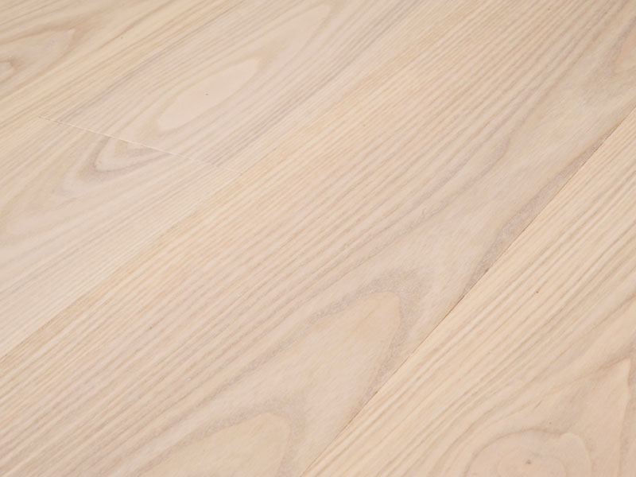
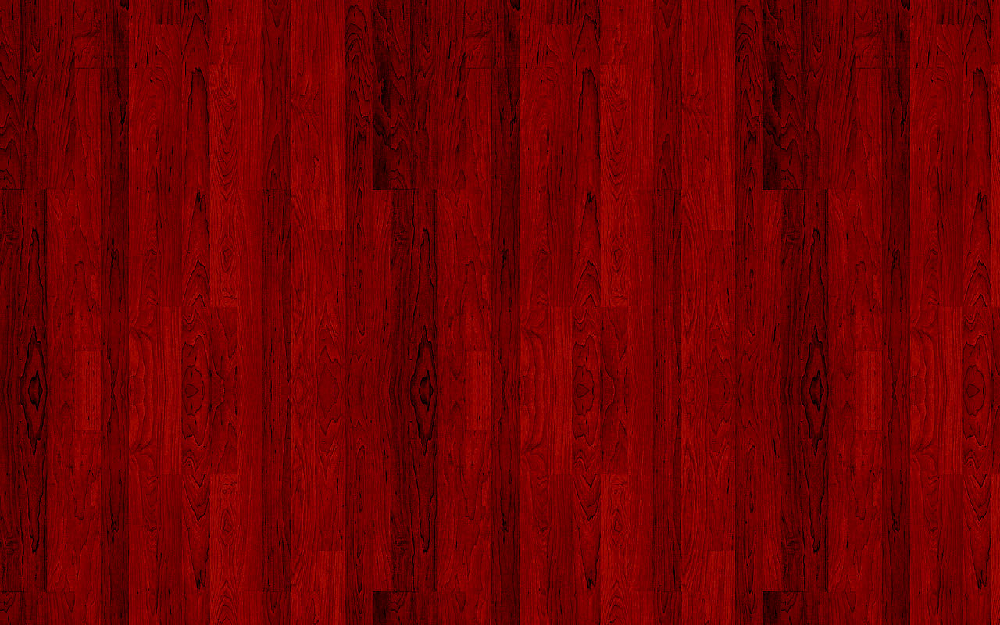

Types of Wood
1.The Ash Wood
2.The Beech Wood

3.The Cherry Wood
4.The Pine Wood

All woods are different, but these differences can range from very subtle to extremely obvious. Ensure your furniture features the right wood for your use. but these differences can range from very subtle to extremely obvious. Ensure your furniture features the right wood for your use.